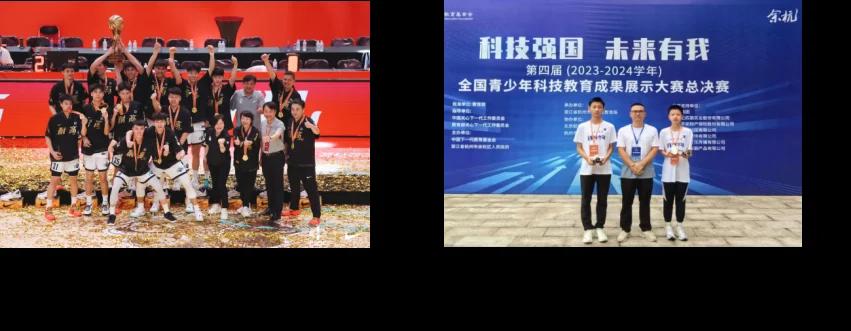

在地中，积蓄向上的力量。让每一种热爱，都有生长的土壤。
校园里的每一次探索，都值得被看见。
从1955年走来，以扎实的育人实践，书写属于地中的成长故事。

在2023至2024赛季中国高中篮球联赛中，地中男篮捧起全国冠军奖杯。
把严谨求实的科学精神，融入课堂、探索与每一次动手实践。
从地质人的教育初心出发，扎根湖湘，躬耕杏坛。湖南省地质中学以扎实的教育，陪伴每一位学子向阳生长。
学校创办，育人初心由此启程
传承李四光精神在探索中认识世界
关爱全体学生推进整体进步
让科学精神与人文底蕴相遇，让热爱与才华自由生长。
让问题走出课本，让答案来自实践。
在拼搏中锻炼意志，在协作中学会担当。
在阅读与表达中，丰盈内心的世界。
从校园走向生活，把知识变成行动。
了解入学信息，认识这所学校。让期待，有清晰的方向。
试试搜索“招生”“篮球”或“校园”